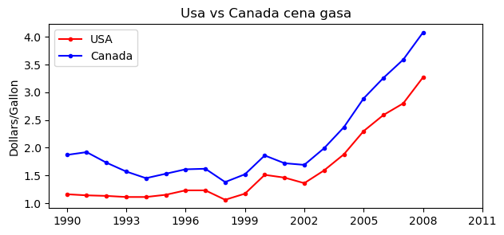
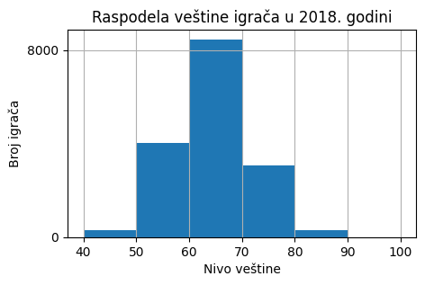
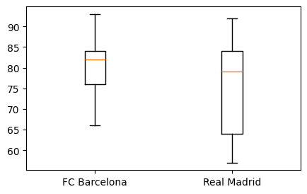
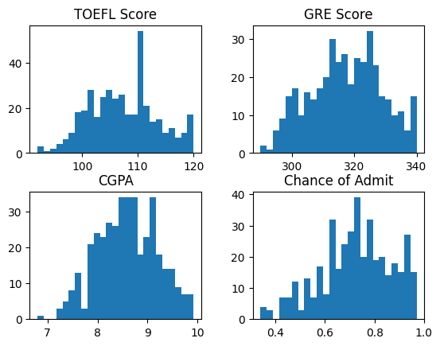
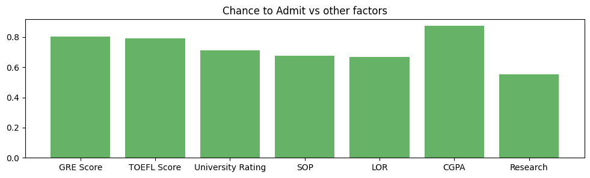
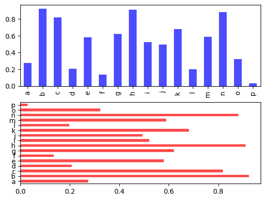
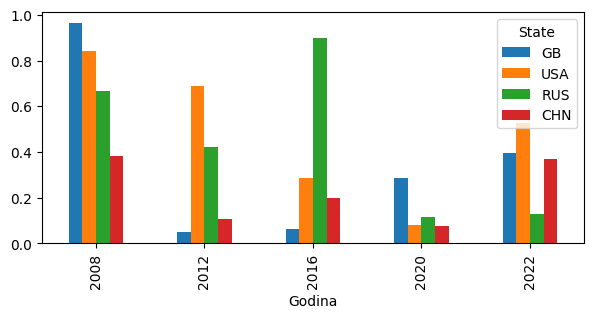
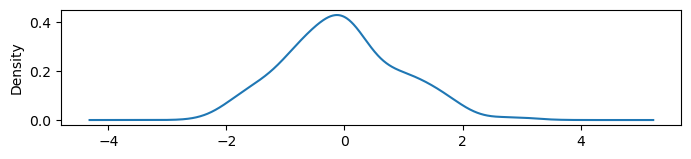
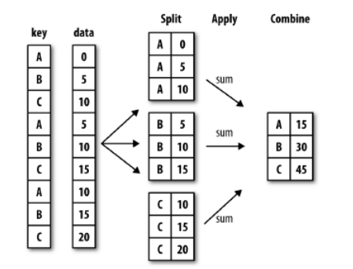
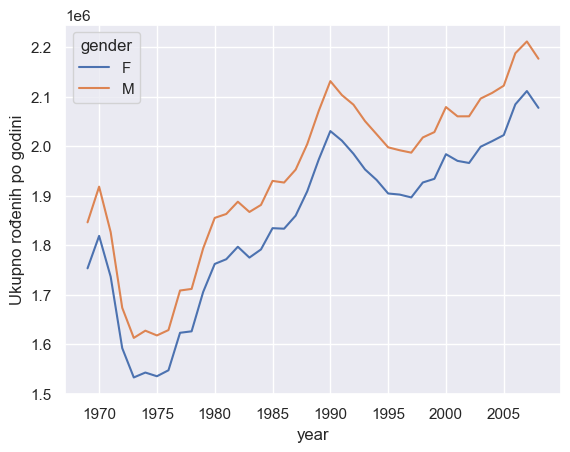

Uvod u analizu podataka - 🐼 Pandas
U stvarnom svetu, podaci retko dolaze u savršenom obliku. Najčešće dobijamo CSV datoteke sa pogrešnim zaglavljima, eksel tabele sa viškom praznina, API odgovore sa nepotrebnim poljima ili čitave tekstualne datoteke iz kojih treba izdvojiti informacije. Tu nastupa Pandas — moćna Pajtonova biblioteka koja omogućava praktično sve korake tipične data-analitike:
učitavanje podataka,
pregled i razumevanje strukture,
filtriranje, sortiranje i selektovanje,
transformaciju i čišćenje,
agregaciju i grupisanje,
pripremu za vizuelizaciju i modeliranje.
Možete ga zamisliti kao ekslel na steroidima, ali sa daleko više fleksibilnosti i automatizacije, koja omogućava da se i ogromni skupovi podataka analiziraju brzo i efikasno.
Ključni pojmovi u Pandasu su:
Series– jednodimenzionalni niz podataka (kao kolona u tabeli),DataFrame– dvodimenzionalna tabela slična Excel-u, ali mnogo moćnija.
Pandas je danas standard u nauci o podacima, finansijskoj analizi, poslovnoj inteligenciji, ekonomiji, bankarstvu, statistici i istraživačkom radu. Gde god postoje podaci, verovatno je negde u blizini — Pandas.
Pandas nije samo biblioteka za manipulaciju podacima — on je interfejs za dijalog sa podacima, gde možemo odmah da dobijemo odgovor na konkretno pitanje koje se pojavljuje u tekstu. U nastavku ćemo baš to raditi: učitavaćemo podatke i na svako pitanje odgovaraćemo brzo, precizno i programski, koristeći Pandas kao najprirodniji način da ispitamo skup podataka.
Ciljevi, ishodi učenja i literatura
🎯 Cilj ovog poglavlja su
da se studenti upoznaju sa procesom pripreme podataka: učitavanje dataset-a, pregled strukture, čišćenje i formiranje novog DataFrame-a spremnog za analizu.
Uvesti pivot tabele kao alat za sumiranje i restrukturiranje pripremljenih podataka.
Povezati pivot tabele sa konceptom
GroupByi principom Split–Apply–Combine u analizi podataka.
✅ Posle časa student treba da bude sposoban da:
Samostalno pripremi podatke za pivot analizu — da učita dataset, doda kolone, spoji Series objekte i kreira konzistentan DataFrame.
Primenjuje
pivot_table()na realnim datasetovima uz pravilno definisanje index, columns, values i aggfunc.Na osnovu pivot analize interpretira rezultate u realnom kontekstu (npr. razlike po polu, klasi, godini, gradu…).
📚 Sadržaj materijala u ovom poglavlju je tipičan za uvod u Pandas i jasno je u duhu sledećih izvora:
Pandas zvanična dokumentacija – User Guide:
Wes McKinney – Python for Data Analysis (2nd edition), O’Reilly, 2017.
Jake VanderPlas – Python Data Science Handbook, O’Reilly, 2016.
Kaggle – “Titanic: Machine Learning from Disaster”.
Javni skupovi podataka o rađanju (npr. US births).
Instalacija Pandas-a
Ako koristite Anacondu, onda već imate instaliran modul Pandas. Ako je Pandas instaliran, možete da ga uvezete i proverite verziju:
import pandas
pandas.__version__
'2.3.3'
Ako nemate najnoviju verziju, tada modulom pip možemo ažuirati biblioteku sa:
%pip install --upgrade pandas
Instalacija Pandas-a na vašem sistemu zahteva da se instalira NumPy-a. Pa ako nemate instaliranu Anacondu, a već ste instalirali Numpy, tada prvo moramo da uvezemo pandas iz spoljnih izvora pip modulom:
%pip install pandas
Kao što numpy obično uvozimo sa aliasom np, tako i pandas uvozimo sa aliasom pd:
import pandas as pd
Uvod u Pandas objekte
import numpy as np
import pandas as pd
Objekat Series
Pandas objekat Series je jednodimenzionalni niz indeksiranih podataka. On se može kreirati iz liste ili ndarray objekta kao što sledi:
podaci = pd.Series([0.12, 0.15, 0.17, 1.1, 1.2])
podaci
0 0.12
1 0.15
2 0.17
3 1.10
4 1.20
dtype: float64
Ako drugačije nije navedeno objekat Series je indeksiran poput jednodimenzionalne liste, torke ili ndarray objekta: celim uzastopnim brojevima koji počinju od nule. I ne samo to, pristup vrednostima Series objekta, isecanje, izmena i dodavanje je isto kao u rečnicima iili ndarray objektima. Primeri:
podaci[2]
np.float64(0.17)
podaci[5]=1.11
podaci
0 0.12
1 0.15
2 0.17
3 1.10
4 1.20
5 1.11
dtype: float64
Princip indeksiranja se može promeniti dodavanjemo argumenta index konstruktoru pd.Series čija je vrednost lista sa vrednostima indeksa. Interesatno je da lista sa indeksima može biti neuređena i da ima više istih vrednosti, što omogućava dodatne mogućnosti pri analizi podataka.
podaci = pd.Series([0.12, 0.15, 0.17, 1.1, 1.2], index = [1 , 3, 'a', 2.2, 0])
podaci
1 0.12
3 0.15
a 0.17
2.2 1.10
0 1.20
dtype: float64
Analogija serije kao rečnika može biti još jasnija konstruisanjem objekta serije direktno iz Python rečnika:
pop_dict = { 'Beograd': 1612085,
'Novi Sad': 372999,
'Niš': 257867,
'Kragujevac': 191919,
'Leskovac': 144206,
'Subotica': 141554}
pop = pd.Series(pop_dict)
pop
Beograd 1612085
Novi Sad 372999
Niš 257867
Kragujevac 191919
Leskovac 144206
Subotica 141554
dtype: int64
Pandin objekat DataFrame
Možda najvažnija struktura u Pandasu je DataFrame. Kao i objekat Series, DataFrame možemo shvatiti kao generalizaciju Numpy ndarray objekta ili kao specijalizovani Python-ov rečnik.
Kreiranja DataFrame objekta
Objekat DataFrame možemo kreirati na veliki broj načina, ovde izdvajamo nekoliko. Kompletnu listu načina kreiranja objekta DataFrame sa svim detaljima možete naći na veb lokaciji: https://pandas.pydata.org/docs/user_guide/io.html
Kreiranje DataFrame objekta podacima iz datoteke.
Objekat DataFrame možemo da kreiramo uvozom podataka iz datoteke. Evo dva primera sa csv i xlsx datotekama:
df = pd.read_csv("https://raw.githubusercontent.com/dazdejkovic/Podaci/main/OI/Pandas/vreme.csv", header=[0,1], index_col=[0,1], parse_dates=[1])
df.index.set_names(["Grad", "Datum"], inplace=True)
df.head(5)
| Dan | Noc | ||||||
|---|---|---|---|---|---|---|---|
| Vreme | Vetrovitost | Maksimalna_temperatura | Vreme | Vetrovitost | Maksimalna_temperatura | ||
| Grad | Datum | ||||||
| Kembridz | 2019-07-01 | Kisno | SW 16 mph | 24 | Kisno | SW 16 mph | 17 |
| 2019-07-02 | Jaki pljuskovi | E 20 mph | 21 | Jaki pljuskovi | E 20 mph | 16 | |
| 2019-07-03 | Jaki pljuskovi | SE 10 mph | 22 | Jaki pljuskovi | SE 10 mph | 16 | |
| 2019-07-04 | Kisno | S 25 mph | 22 | Mestimicno oblacno | S 25 mph | 16 | |
| London | 2019-07-01 | Kisno | SW 16 mph | 28 | Kisno | SW 16 mph | 18 |
ili
df=pd.read_excel("https://raw.githubusercontent.com/dazdejkovic/Podaci/main/OI/Pandas/vreme.xlsx", header=[0,1], index_col=[0,1], parse_dates=[1])
df.head(5)
| Dan | Noc | ||||||
|---|---|---|---|---|---|---|---|
| Vreme | Vetrovitost | Maksimalna_temperatura | Vreme | Vetrovitost | Maksimalna_temperatura | ||
| Grad | Datum | ||||||
| Kembridz | 2019-07-01 | Kisno | SW 16 mph | 24 | Kisno | SW 16 mph | 17 |
| 2019-07-02 | Jaki pljuskovi | E 20 mph | 21 | Jaki pljuskovi | E 20 mph | 16 | |
| 2019-07-03 | Jaki pljuskovi | SE 10 mph | 22 | Jaki pljuskovi | SE 10 mph | 16 | |
| 2019-07-04 | Kisno | S 25 mph | 22 | Mestimicno oblacno | S 25 mph | 16 | |
| London | 2019-07-01 | Kisno | SW 16 mph | 28 | Kisno | SW 16 mph | 18 |
Ako se datoteka ne nalazi u radnom direktorijumu onda navodimo apsolutnu u putanju do nje ili relativnu ako je folder koji je sadrži podfolder radnog. Takođe, moguće je navesti i lokaciju na mreži koja sadrži date podatke.
#Neophodno je imati najnoviju verziju Pandas-a
df= pd.read_excel("http://one.ekof.bg.ac.rs/~azdr/Data/OI/vreme.xlsx")
df
| Datum | Temperatura | Brzina vetra | Događaj | |
|---|---|---|---|---|
| 0 | 2022-01-12 | 6 | 6 | Kiša |
| 1 | 2022-02-12 | 5 | 2 | Sunce |
| 2 | 2022-03-12 | -2 | 1 | Sneg |
Kao što vidimo, vrste su na prirodan način indeksirane, međutim ako želimo da budu indeksirane nekom od kolona to se postiže dodavanjem argumeta index_col DataFrame konstruktoru:
df= pd.read_excel("http://one.ekof.bg.ac.rs/~azdr/Data/OI/vreme.xlsx", index_col ='Datum')
df
| Temperatura | Brzina vetra | Događaj | |
|---|---|---|---|
| Datum | |||
| 2022-01-12 | 6 | 6 | Kiša |
| 2022-02-12 | 5 | 2 | Sunce |
| 2022-03-12 | -2 | 1 | Sneg |
Konstrukcija DataFrame objekta pomoću rečnika listi.
Konstruktor DataFrame će ključeve rečnika dodeliti imenima kolona, a vrednosti u kolonama će biti su u listi pod tim ključem.
recnik = { 'Datum' : ['2022-01-12', '2022-02-12', '2022-03-12'],
'Temperatura' : [6, 5, -2],
'Brzina vetra' : [6, 2, 1],
'Događaj' : ['Kiša', 'Sunce', 'Sneg']}
df=pd.DataFrame(recnik)
df
| Datum | Temperatura | Brzina vetra | Događaj | |
|---|---|---|---|---|
| 0 | 2022-01-12 | 6 | 6 | Kiša |
| 1 | 2022-02-12 | 5 | 2 | Sunce |
| 2 | 2022-03-12 | -2 | 1 | Sneg |
Ako želimo da objekat bude indeksiran nekom od kolona, to postižemo na sledeći način:
df.set_index('Datum')
| Temperatura | Brzina vetra | Događaj | |
|---|---|---|---|
| Datum | |||
| 2022-01-12 | 6 | 6 | Kiša |
| 2022-02-12 | 5 | 2 | Sunce |
| 2022-03-12 | -2 | 1 | Sneg |
df
| Datum | Temperatura | Brzina vetra | Događaj | |
|---|---|---|---|---|
| 0 | 2022-01-12 | 6 | 6 | Kiša |
| 1 | 2022-02-12 | 5 | 2 | Sunce |
| 2 | 2022-03-12 | -2 | 1 | Sneg |
Ako želimo trajnu izmenu koristimo argument inplace i njegovu vrednost True
df.set_index('Datum', inplace=True)
df
| Temperatura | Brzina vetra | Događaj | |
|---|---|---|---|
| Datum | |||
| 2022-01-12 | 6 | 6 | Kiša |
| 2022-02-12 | 5 | 2 | Sunce |
| 2022-03-12 | -2 | 1 | Sneg |
Kreiranje DataFrame objekta pomoću listi sa torkama.
U ovom slučaju svaka torka je jedan red DataFrame objekta. Konstruktor pd.DataFrame će dodeliti sam imena kolonama.
vreme = [
('2023-01-12', 6, 6, 'Kiša'),
('2023-02-12', 5, 2, 'Sunce'),
('2023-03-12', -2, 1, 'Sneg'),
('2023-26-12', 12, 3, 'Sunce'),
('2023-27-12', 11, 2, 'Sunce')]
df = pd.DataFrame(vreme)
df
| 0 | 1 | 2 | 3 | |
|---|---|---|---|---|
| 0 | 2023-01-12 | 6 | 6 | Kiša |
| 1 | 2023-02-12 | 5 | 2 | Sunce |
| 2 | 2023-03-12 | -2 | 1 | Sneg |
| 3 | 2023-26-12 | 12 | 3 | Sunce |
| 4 | 2023-27-12 | 11 | 2 | Sunce |
Kao bi imenovali kolone, konstruktoru prosleđujemo dodavanjemo argument columns čija je vrednost lista imena:
df = pd.DataFrame(vreme, columns=['Datum', 'Temperatura', 'Brzina vetra', 'Događaj'])
df
| Datum | Temperatura | Brzina vetra | Događaj | |
|---|---|---|---|---|
| 0 | 2023-01-12 | 6 | 6 | Kiša |
| 1 | 2023-02-12 | 5 | 2 | Sunce |
| 2 | 2023-03-12 | -2 | 1 | Sneg |
| 3 | 2023-26-12 | 12 | 3 | Sunce |
| 4 | 2023-27-12 | 11 | 2 | Sunce |
Kreiranje DataFrame objekta pomoću listi sa rečnicima.
Lista čiji su elementi rečnici sa istim ključevima takođe može biti izvor za kreiranje DataFrame objekta. Prirodno, ključevi listi će biti imena kolona u DataFrame objektu.
vreme = [
{'Datum':'2022-01-12', 'Temperatura': 6, 'Brzina vetra': 6, 'Događaj': 'Kiša'},
{'Datum':'2022-02-12', 'Temperatura': 5, 'Brzina vetra': 2, 'Događaj': 'Sunce'},
{'Datum':'2022-03-12', 'Temperatura': -2, 'Brzina vetra': 1, 'Događaj': 'Sneg'}]
df = pd.DataFrame(vreme)
df
| Datum | Temperatura | Brzina vetra | Događaj | |
|---|---|---|---|---|
| 0 | 2022-01-12 | 6 | 6 | Kiša |
| 1 | 2022-02-12 | 5 | 2 | Sunce |
| 2 | 2022-03-12 | -2 | 1 | Sneg |
Čak i kad neki ključevi u rečniku nedostaju, Pandas će ih dopuniti sa NaN (tj. „nije broj”) vrednostima:
pd.DataFrame([{'a':1, 'b':2}, {'a':3, 'c':4}])
| a | b | c | |
|---|---|---|---|
| 0 | 1 | 2.0 | NaN |
| 1 | 3 | NaN | 4.0 |
Od jednog Series objekta.
Neki DataFrame je kolekcija Series objekata, a DataFrame sa jednom kolonom može se konstruisati od jednog Series objekta:
pd.DataFrame(pop, columns=['Populacija'])
| Populacija | |
|---|---|
| Beograd | 1612085 |
| Novi Sad | 372999 |
| Niš | 257867 |
| Kragujevac | 191919 |
| Leskovac | 144206 |
| Subotica | 141554 |
Od rečnika sa objektima Series.
DataFrame može se konstruisati pomoću rečnika čije su vrednosti objekati klase Series. Indeks novog objekta će sadžati uniju indeksa objekata Series.
area_dict = { 'Beograd': 1312,
'Novi Sad': 699,
'Niš': 602,
'Kragujevac': 826,
'Leskovac': 1025,
'Subotica': 1008,
'Valjevo': 2002}
area = pd.Series(area_dict)
area
Beograd 1312
Novi Sad 699
Niš 602
Kragujevac 826
Leskovac 1025
Subotica 1008
Valjevo 2002
dtype: int64
df = pd.DataFrame({'Populacija':pop, 'Površina':area})
df
| Populacija | Površina | |
|---|---|---|
| Beograd | 1612085.0 | 1312 |
| Kragujevac | 191919.0 | 826 |
| Leskovac | 144206.0 | 1025 |
| Niš | 257867.0 | 602 |
| Novi Sad | 372999.0 | 699 |
| Subotica | 141554.0 | 1008 |
| Valjevo | NaN | 2002 |
Od dvodimenzionalnog NumPy niza.
Dati dvodimenzionalni niz podataka, može se konvertovati u DataFrame sa proizvoljnom specifikacijom imena za kolone i indeks. Ako se nešto od prethodnog izostavi, primeniće se celobrojni indeksi.
arr = np.random.randint(0,9, (3,2))
arr
array([[6, 2],
[4, 1],
[6, 3]])
df= pd.DataFrame(arr, columns=['A', 'B'], index=['x','y', 'z'])
df
| A | B | |
|---|---|---|
| x | 6 | 2 |
| y | 4 | 1 |
| z | 6 | 3 |
Indeksiranje i selekcija podataka
U modulu NumPy videli smo detaljno metode i alate za pristup, postavljanje i menjanje vrednosti u ndarray objektima. To uključuje indeksiranje (arr[2,3]), izdvajanje (arr[:,2:4]), maskiranje (arr[arr!=0]), fensi indeksiranje (arr[0,[2,7]]) ili njihova kombinacija (arr[:,[2,8]]). Ovde ćemo videti slične ishode pri pristupu i modifikaciji vrednostima u Pandas objektima Series i DataFrame.
Selekcija podataka u objektu Series
Kao što smo videli u prethodnom odeljku, objekat serije deluje na mnogo načina kao jednodimenzionalni NumPy niz, i na mnogo načina kao standardni Python rečnik. Ako imamo na umu ove dve analogije koje se preklapaju, to će nam pomoći da razumemo obrasce indeksiranja i selekcije podataka u ovim nizovima.
Serija kao rečnik
Kao rečnik, objekat serije obezbeđuje mapiranje iz kolekcije ključeva u kolekciju vrednosti:
data = pd.Series(np.linspace(0,1,5), index = ['a', 'b', 'c', 'd', 'e'])
data
a 0.00
b 0.25
c 0.50
d 0.75
e 1.00
dtype: float64
data['d']
0.75
Takođe možemo da koristimo Python izraze i metode slične rečniku da bismo ispitali ključ/indeks i vrednosti:
'b' in data
True
data.keys()
Index(['a', 'b', 'c', 'd', 'e'], dtype='object')
list(data.items())
[('a', 0.0), ('b', 0.25), ('c', 0.5), ('d', 0.75), ('e', 1.0)]
Objekti serije mogu se čak modifikovati pomoću sintakse slične rečniku. Baš kao što možemo da proširimo rečnik dodeljivanjem novom ključu, možemo proširiti seriju dodeljivanjem na novu vrednost indeksa:
data['f']=1.25
data
a 0.00
b 0.25
c 0.50
d 0.75
e 1.00
f 1.25
dtype: float64
Ova laka promenljivost objekata je zgodna karakteristika: ispod haube Pandas donose odluke o rasporedu memorije i kopiranju podataka koje bi moglo biti potrebno; korisnik generalno ne mora da brine o ovim pitanjima.
Series kao jednodimenzionalni niz
Serija se zasniva na interfejsu nalik rečniku i omogućava selekciju u stilu niza preko istih osnovnih mehanizama kao i NumPy nizovima — to jest, isecanje, maskiranje i fensi indeksiranje. Primeri su sledeći:
# Izdvajanje eksplicitnim indeksom
data['d':'f']
d 0.75
e 1.00
f 1.25
dtype: float64
# Izdvajanje implicitnim celobrojnim indeksom
data[4:6]
e 1.00
f 1.25
dtype: float64
# Maskiranje
data[(data > 0.4) & (data < 1.1)]
c 0.50
d 0.75
e 1.00
dtype: float64
# Fensi indeksiranje
data[['b','f']]
b 0.25
f 1.25
dtype: float64
Među ovim operacijama, isecanje može biti izvor najveće zabune. Primetite to kada ste sekli sa eksplicitnim indeksom
(tj. data['d':'f']), konačni indeks je uključen u isečak, dok kada sečete sa implicitnim indeksom (tj. data[4:6]), konačni indeks je isključen iz preseka.
Indeksari: loc, iloc
Ove konvencije sečenja i indeksiranja mogu biti izvor zabune. Na primer, ako vaša serija ima eksplicitni celobrojni indeks, operacija indeksiranja kao što je data[1] će koristiti eksplicitne indekse, dok će operacija sečenja kao što je data[1:3] koristiti implicitne indeks u Python stilu.
data = pd.Series(list('abcd'), index=range(1,9,2))
data
1 a
3 b
5 c
7 d
dtype: object
# eksplicitni index pri indeksiranju
data[3]
'b'
# implicitni index pri isecanju
data[1:3]
3 b
5 c
dtype: object
Zbog ove potencijalne zabune u slučaju celobrojnih indeksa, Pandas pruža posebne atribute indeksiranja koji eksplicitno otkrivaju određene šeme indeksiranja. Ovo nisu funkcionalne metode, već atributi koji izlažu određeni interfejs za sečenje podataka u seriji.
Prvo, atribut loc dozvoljava indeksiranje i isesecanje koje uvek upućuje na eksplicitni indeks:
data.loc[3]
'b'
data.loc[1:3]
1 a
3 b
dtype: object
Atribut iloc omogućava indeksiranje i isecanje koje uvek upućuje na implicitni indeks u Python stilu:
data.iloc[3]
'd'
data.iloc[1:3]
3 b
5 c
dtype: object
Vodeći princip Python koda je da je „eksplicitno bolje od implicitnog“. Eksplicitna priroda loc i iloc ih čini veoma korisnim u održavanju čistog i čitljivog koda; posebno u slučaju celobrojnih indeksa, preporučujem da ih koristite kako bi
učinili kod lakšim za čitanje i razumevanje i sprečili suptilne greške zbog mešanja konvencija indeksiranja/isecanja.
Selekcija podataka u DataFrame-u
Podsetimo se da DataFrame deluje na mnogo načina kao dvodimenzionalni ili strukturirani niz, ili na drugi način kao rečnik struktura serija koje dele isti indeks. Ove analogije mogu biti od pomoći dok istražujemo selekciju podataka unutar ove strukture.
DataFrame kao rečnik
Prva analogija koju ćemo razmotriti je DataFrame kao rečnik povezanih serija objekata. Vratimo se našem primeru područja i stanovništva gradova:
area = pd.Series({ 'Beograd': 1312, 'Novi Sad': 699, 'Niš': 602, 'Kragujevac': 826, 'Leskovac': 1025, 'Subotica': 1008})
pop = pd.Series({ 'Beograd': 1612085, 'Novi Sad': 372999, 'Niš': 257867, 'Kragujevac': 191919, 'Leskovac': 144206,
'Subotica': 141554})
data = pd.DataFrame({'Površina': area, 'Populacija':pop})
data
| Površina | Populacija | |
|---|---|---|
| Beograd | 1312 | 1612085 |
| Novi Sad | 699 | 372999 |
| Niš | 602 | 257867 |
| Kragujevac | 826 | 191919 |
| Leskovac | 1025 | 144206 |
| Subotica | 1008 | 141554 |
Može se pristupiti pojedinačnim serijama koje čine kolone DataFrame-a preko indeksiranja naziva kolone u stilu rečnika:
data["Površina"]
Beograd 1312
Novi Sad 699
Niš 602
Kragujevac 826
Leskovac 1025
Subotica 1008
Name: Površina, dtype: int64
Ekvivalentno, možemo koristiti pristup u stilu atributa sa nazivima kolona koji su stringovi:
data.Površina
Beograd 1312
Novi Sad 699
Niš 602
Kragujevac 826
Leskovac 1025
Subotica 1008
Name: Površina, dtype: int64
Ovaj pristup koloni u stilu atributa zapravo pristupa potpuno istom objektu kao i pristup u stilu rečnika:
data.Površina is data['Površina']
True
Kao i kod objekata serije o kojima smo ranije govorili, sintaksa u stilu rečnika takođe može biti od koristi za modifikaciju objekta, u ovom slučaju za dodavanje nove kolone:
data['gustina']=round(data['Populacija']/data['Površina'],0)
data
| Površina | Populacija | gustina | |
|---|---|---|---|
| Beograd | 1312 | 1612085 | 1229.0 |
| Novi Sad | 699 | 372999 | 534.0 |
| Niš | 602 | 257867 | 428.0 |
| Kragujevac | 826 | 191919 | 232.0 |
| Leskovac | 1025 | 144206 | 141.0 |
| Subotica | 1008 | 141554 | 140.0 |
Prethodna operacija, pokazuje jednostavnu sintaksu aritmetike element po element između objekata serije.
DataFrame kao dvodimenzionalni niz
Kao što je ranije pomenuto, DataFrame takođe možemo posmatrati kao poboljšani dvodimenzionalni niz. Možemo da koristimo osnovni niz podataka koristeći atribut vrednost:
data.values
array([[1.312000e+03, 1.612085e+06, 1.229000e+03],
[6.990000e+02, 3.729990e+05, 5.340000e+02],
[6.020000e+02, 2.578670e+05, 4.280000e+02],
[8.260000e+02, 1.919190e+05, 2.320000e+02],
[1.025000e+03, 1.442060e+05, 1.410000e+02],
[1.008000e+03, 1.415540e+05, 1.400000e+02]])
Imajući na umu ovu sliku, možemo da uradimo mnoge poznate operacije na DataFrame-u, kao kod nizova. Na primer, možemo da transponujemo ceo DataFrame da zamenimo redove i kolone:
data.T
| Beograd | Novi Sad | Niš | Kragujevac | Leskovac | Subotica | |
|---|---|---|---|---|---|---|
| Površina | 1312.0 | 699.0 | 602.0 | 826.0 | 1025.0 | 1008.0 |
| Populacija | 1612085.0 | 372999.0 | 257867.0 | 191919.0 | 144206.0 | 141554.0 |
| gustina | 1229.0 | 534.0 | 428.0 | 232.0 | 141.0 | 140.0 |
Međutim, kada je reč o indeksiranju DataFrame objekata, jasno je nas indeksiranje kolona u stilu rečnika onemogućava da ga jednostavno tretiramo kao NumPy niz. Konkretno, prosleđivanjem jednog indeksa nizu pristupamo redu:
data.values[0]
array([1.312000e+03, 1.612085e+06, 1.229000e+03])
a prosleđivanjem jednog „indeksa” DataFrame-u dobijamo kolonu!! :
data['Površina']
Beograd 1312
Novi Sad 699
Niš 602
Kragujevac 826
Leskovac 1025
Subotica 1008
Name: Površina, dtype: int64
Dakle, za indeksiranje u stilu niza, potrebna nam je još jedna konvencija. Ovde Pande ponovo koriste loc i iloc indeksare pomenute ranije. Koristeći iloc indekser, možemo indeksirati osnovni niz kao da je jednostavan NumPy niz (koristeći implicitni indeks u Python stilu), ali se indeks DataFrame i oznake kolona održavaju u rezultatu:
data.iloc[:3,:2]
| Površina | Populacija | |
|---|---|---|
| Beograd | 1312 | 1612085 |
| Novi Sad | 699 | 372999 |
| Niš | 602 | 257867 |
data.loc[:'Niš',:'Populacija']
| Površina | Populacija | |
|---|---|---|
| Beograd | 1312 | 1612085 |
| Novi Sad | 699 | 372999 |
| Niš | 602 | 257867 |
Bilo koji od poznatih obrazaca pristupa podacima u NumPy stilu može se koristiti u okviru ovih indeksatora. Na primer, u loc indeksatoru možemo kombinovati maskiranje i fensi indeksiranje, kao u sledećem primeru:
data.loc[data.gustina>400,['Populacija', 'gustina']]
| Populacija | gustina | |
|---|---|---|
| Beograd | 1612085 | 1229.0 |
| Novi Sad | 372999 | 534.0 |
| Niš | 257867 | 428.0 |
Bilo koja od ovih konvencija indeksiranja se takođe može koristiti za postavljanje ili modifikovanje vrednosti. To je urađeno na standardni način na koji ste možda navikli kod NumPy:
data.iloc[0, 2] = 900
data
| Površina | Populacija | gustina | |
|---|---|---|---|
| Beograd | 1312 | 1612085 | 900.0 |
| Novi Sad | 699 | 372999 | 534.0 |
| Niš | 602 | 257867 | 428.0 |
| Kragujevac | 826 | 191919 | 232.0 |
| Leskovac | 1025 | 144206 | 141.0 |
| Subotica | 1008 | 141554 | 140.0 |
Da biste poboljšali svoju veštinu u manipulaciji Pandas podacima, predlažem da provedete malo vremena sa jednostavnim DataFrame-ovima, istraživanjem tipova indeksiranja, sečenja, maskiranja i fensi indeksiranje koje dozvoljavaju ovi različiti pristupi indeksiranju.
Dodatne konvencije indeksiranja
Postoji nekoliko dodatnih konvencija indeksiranja koje mogu izgledati u suprotnosti sa prethodnom diskusijom, ali ipak mogu biti veoma korisne u praksi. Prvo, indeksiranje odnosi se na kolone, a isecanje se odnosi na redove!!:
data['Novi Sad':'Leskovac']
| Površina | Populacija | gustina | |
|---|---|---|---|
| Novi Sad | 699 | 372999 | 534.0 |
| Niš | 602 | 257867 | 428.0 |
| Kragujevac | 826 | 191919 | 232.0 |
| Leskovac | 1025 | 144206 | 141.0 |
Ovakvo isecanje može takođe da referiše na redove prema broju umesto po indeksu:
data[1:5]
| Površina | Populacija | gustina | |
|---|---|---|---|
| Novi Sad | 699 | 372999 | 534.0 |
| Niš | 602 | 257867 | 428.0 |
| Kragujevac | 826 | 191919 | 232.0 |
| Leskovac | 1025 | 144206 | 141.0 |
Slično, direktne operacije maskiranja se takođe interpretiraju na redove umesto na kolone:
data[data.gustina <400]
| Površina | Populacija | gustina | |
|---|---|---|---|
| Kragujevac | 826 | 191919 | 232.0 |
| Leskovac | 1025 | 144206 | 141.0 |
| Subotica | 1008 | 141554 | 140.0 |
Ove dve konvencije su sintaksno slične onima na NumPy nizu, i mada se možda ne uklapaju tačno u šablon Pandas konvencija, ipak jesu prilično korisne u praksi.
Operacije na podacima u Pandama
Jedan od osnovnih delova NumPy-a je sposobnost brzog izvođenja elemenat na element operacije, kako sa osnovnom aritmetikom (sabiranje, oduzimanje, množenje, itd.), tako i sa sofisticiranijim operacijama (trigonometrijske funkcije, eksponencijalne i logaritamske funkcije itd.). Pandas nasleđuje veliki deo ove funkcionalnosti od NumPy-a, a ufuncs koje smo uveli kod Numpy-ja su ključne u tome.
Pandas uključuje nekoliko korisnih zaokreta, međutim: za unarne operacije poput negacije i trigonometrijske funkcije, ufunc će sačuvati oznake indeksa i kolona na izlazu, a za binarne operacije kao što su sabiranje i množenje, Pandas će
automatski poravnati indekse prilikom prosleđivanja objekata ka ufunc. Takođe ćemo videti da postoje dobro definisane operacije između jednodimenzionalne strukture Serije i dvodimenzionalne strukture DataFrame.
Univerzalne funkcije (ufunc): Očuvanje indeksa
Pošto je Pandas dizajniran da radi sa NumPy, bilo koja NumPy ufunc će raditi na Pandas objektima Series i DataFrame. Počnimo sa definisanjem jednostavne Serije i DataFrame na kome ćemo ovo demonstrirati:
np.random.seed(2021)
sr = pd.Series(np.random.randint(10,100,4))
sr
0 95
1 67
2 10
3 96
dtype: int32
df =pd.DataFrame(np.random.randint(10,100, (3,4)),
columns = ['A', 'B', 'C', 'D'])
df
| A | B | C | D | |
|---|---|---|---|---|
| 0 | 54 | 72 | 39 | 31 |
| 1 | 34 | 22 | 80 | 80 |
| 2 | 43 | 17 | 11 | 36 |
Ako primenimo neku NumPy univerzalnu funkcije na bilo koji od ova dva objekta, rezultat će biti drugi Pandas objekat sa sačuvanim indeksima:
np.sin(sr)
0 0.683262
1 -0.855520
2 -0.544021
3 0.983588
dtype: float64
Ili, sa malo složenijem izračunavanjem:
round(np.cos(df*np.pi/2),2)
| A | B | C | D | |
|---|---|---|---|---|
| 0 | -1.0 | 1.0 | -0.0 | -0.0 |
| 1 | -1.0 | -1.0 | 1.0 | 1.0 |
| 2 | -0.0 | -0.0 | -0.0 | 1.0 |
Svaka od univerzalnih funkcija diskutovana u izračunavanjima na NumPy nizovima može se primeniti na sličan način.
Univerzalne funkcije: Operacija između DataFrame i Series
Kada izvodimo operacije između DataFrame-a i Series, indeks i poravnanje kolona se na sličan način održava. Operacije između DataFrame-a i Series su slične operacijama između dvodimenzionalnog i jednodimenzionalnog NumPy niza. Razmotrimo jednu uobičajenu operaciju, gde nalazimo razliku od dvodimenzionalnog niza i jednog od njegovih redova:
A = np.random.randint(10,100, (3,6))
A
array([[31, 35, 20, 46, 29, 67],
[92, 25, 50, 86, 63, 21],
[29, 43, 88, 27, 99, 60]])
A - A[0]
array([[ 0, 0, 0, 0, 0, 0],
[ 61, -10, 30, 40, 34, -46],
[ -2, 8, 68, -19, 70, -7]])
Prema pravilima emitovanja za nizove, oduzimanje dvodimenzionalnog niza i jednog od njegovih redova izvršava se po redovima.
U Pandasu, ova konvencija izvršava se na sličan način:
df = pd.DataFrame(A, columns=list("ABCDEF"))
df - df.iloc[0]
| A | B | C | D | E | F | |
|---|---|---|---|---|---|---|
| 0 | 0 | 0 | 0 | 0 | 0 | 0 |
| 1 | 61 | -10 | 30 | 40 | 34 | -46 |
| 2 | -2 | 8 | 68 | -19 | 70 | -7 |
Ako hoćemo da imamo sličnu operaciju po kolonama, možemo da upotrebimo ranije spomenut metod objekta, specifikujući ključnu reč axis
df.subtract(df['C'], axis=0)
| A | B | C | D | E | F | |
|---|---|---|---|---|---|---|
| 0 | 11 | 15 | 0 | 26 | 9 | 47 |
| 1 | 42 | -25 | 0 | 36 | 13 | -29 |
| 2 | -59 | -45 | 0 | -61 | 11 | -28 |
Primetimo da ove operacije između DataFrame i Series, kao i operacije o kojimo smo diskutovali ranije, automatski poravnavaju indekse među ova dva elementa:
polareda = df.iloc[0, ::2]
polareda
A 31
C 20
E 29
Name: 0, dtype: int32
Sortiranje podataka u DataFrame objektu
Kreirajmo prvo neke podatke:
df= pd.DataFrame(np.random.randint(1,4,size=16).reshape(4,4),
index = ['crvena', 'plava', 'zelena', 'bela'],
columns=['Lopta','Olovka','Flomaster','Papir'])
df
| Lopta | Olovka | Flomaster | Papir | |
|---|---|---|---|---|
| crvena | 1 | 2 | 3 | 2 |
| plava | 3 | 1 | 3 | 3 |
| zelena | 3 | 1 | 3 | 1 |
| bela | 3 | 3 | 2 | 2 |
Za sortiranje podataka u Pandasu važe ista pravila kao i za sortiranje listi, podrazumeva se sortiranje u rastućem poretku i metod daje samo pogled na uređene podatke. Ovde međutim, imamo više mogućnosti. Za početak imamo metode koji sortiraju po koloni ili kolonama i metode koje sortiraju po indeksu ili indeksima.
df.sort_values(by=['Olovka'], inplace=True)
df
| Lopta | Olovka | Flomaster | Papir | |
|---|---|---|---|---|
| plava | 3 | 1 | 3 | 3 |
| zelena | 3 | 1 | 3 | 1 |
| crvena | 1 | 2 | 3 | 2 |
| bela | 3 | 3 | 2 | 2 |
df.sort_index(ascending=False)
| Lopta | Olovka | Flomaster | Papir | |
|---|---|---|---|---|
| zelena | 3 | 1 | 3 | 1 |
| plava | 3 | 1 | 3 | 3 |
| crvena | 1 | 2 | 3 | 2 |
| bela | 3 | 3 | 2 | 2 |
Sortiranje može biti bazirano i na više kolona sa više kriterijuma
df.sort_values(by=['Olovka', 'Papir'], ascending=[False, True])
| Lopta | Olovka | Flomaster | Papir | |
|---|---|---|---|---|
| bela | 3 | 3 | 2 | 2 |
| crvena | 1 | 2 | 3 | 2 |
| zelena | 3 | 1 | 3 | 1 |
| plava | 3 | 1 | 3 | 3 |
Kompletnu lista opcija se možemo uvek dobit magičnom komandom df.sort_values?
Brisanje podataka u DataFrame objektu
Za uklanjanje ili brisanje podataka iz DataFrame ili Series objekata kosriste se metodi:
dropuklanjanjanje jednog ili više redova ili kolona.dropnauklanjanjanje jednog ili više redova ili kolona koji sadrže vrednostNan.
Metodi daju samo pogled na preostale podatke, ako hoćemo da promena bude trajna tada postavljamo da vrednost parametar inplace=True.
Konstrišimo prve neki DataFrame objekat:
df = pd.DataFrame({'Matematika': [60,89,82,70], 'Ekonomija': [66,95,83,66], 'Statistika': [61,91,77,70]},
index=['A', 'B', 'C', 'D'])
df
| Matematika | Ekonomija | Statistika | |
|---|---|---|---|
| A | 60 | 66 | 61 |
| B | 89 | 95 | 91 |
| C | 82 | 83 | 77 |
| D | 70 | 66 | 70 |
Brisanje jednog reda
df.drop(df.index[0])
| Matematika | Ekonomija | Statistika | |
|---|---|---|---|
| B | 89 | 95 | 91 |
| C | 82 | 83 | 77 |
| D | 70 | 66 | 70 |
# To je ekvivalentno sa
df.drop('A')
| Matematika | Ekonomija | Statistika | |
|---|---|---|---|
| B | 89 | 95 | 91 |
| C | 82 | 83 | 77 |
| D | 70 | 66 | 70 |
Brisanje više redova
df.drop(['A','C'])
| Matematika | Ekonomija | Statistika | |
|---|---|---|---|
| B | 89 | 95 | 91 |
| D | 70 | 66 | 70 |
df.drop(df.index[1:3])
| Matematika | Ekonomija | Statistika | |
|---|---|---|---|
| A | 60 | 66 | 61 |
| D | 70 | 66 | 70 |
# Brisanje poslednjeg reda
df.drop(index=df.index[-1])
| Matematika | Ekonomija | Statistika | |
|---|---|---|---|
| A | 60 | 66 | 61 |
| B | 89 | 95 | 91 |
| C | 82 | 83 | 77 |
Brisanje kolona
# Brisanje cele kolone
df.drop(labels='Matematika', axis=1)
| Ekonomija | Statistika | |
|---|---|---|
| A | 66 | 61 |
| B | 95 | 91 |
| C | 83 | 77 |
| D | 66 | 70 |
# Ili još jasnije
df.drop(columns='Matematika')
| Ekonomija | Statistika | |
|---|---|---|
| A | 66 | 61 |
| B | 95 | 91 |
| C | 83 | 77 |
| D | 66 | 70 |
Brisanje više kolona
df.drop(columns=['Matematika', 'Statistika'])
| Ekonomija | |
|---|---|
| A | 66 |
| B | 95 |
| C | 83 |
| D | 66 |
Brisanje kolone bazirano na poziciji
df.drop(columns=df.columns[0:3:2]) #Brisanje svake druge kolone
| Ekonomija | |
|---|---|
| A | 66 |
| B | 95 |
| C | 83 |
| D | 66 |
Vizuelizacija u modulu Pandas
Vizuelizacija u modulu Pandas baziranja je na sledeće dve činjenice:
Matlotlib modul može da prihvati kolone DataFrame-a kao ulazne podatke.
Pandas ima svoje metode za vizelizaciju koje su kompatibilne sa metodama iz modula matplotlib.
Rad počinjemo uvoženjem neophodnih modula i postavljanjem beležnice za statične dijagrame.
import pandas as pd
import numpy as np
import matplotlib.pyplot as plt
%matplotlib inline
Primer 1.
Na veb adresi https://raw.githubusercontent.com/KeithGalli/matplotlib_tutorial/master/gas_prices.csv nalaze podaci o ceni gasa u USA i Kanadi 90 tih godina. Skicirajte linijski dijagram tih podataka.
Učitajmo podatke i pogledajmo prvih nekoliko redova:
gas = pd.read_csv('https://raw.githubusercontent.com/KeithGalli/matplotlib_tutorial/master/gas_prices.csv')
gas.head(3)
| Year | Australia | Canada | France | Germany | Italy | Japan | Mexico | South Korea | UK | USA | |
|---|---|---|---|---|---|---|---|---|---|---|---|
| 0 | 1990 | NaN | 1.87 | 3.63 | 2.65 | 4.59 | 3.16 | 1.0 | 2.05 | 2.82 | 1.16 |
| 1 | 1991 | 1.96 | 1.92 | 3.45 | 2.90 | 4.50 | 3.46 | 1.3 | 2.49 | 3.01 | 1.14 |
| 2 | 1992 | 1.89 | 1.73 | 3.56 | 3.27 | 4.53 | 3.58 | 1.5 | 2.65 | 3.06 | 1.13 |
Ako hoćemo da pratimo cenu gasa u Americi i Kanadi …
plt.figure('Linijski dijagram - Matlab stil, preko metoda plot iz matplotliba', figsize=(7,3))
plt.plot(gas.Year, gas.USA, 'r.-', label='USA') # MatLab stil
plt.plot(gas.Year, gas.Canada, 'b.-', label='Canada')
plt.title('Usa vs Canada cena gasa')
plt.ylabel('Dollars/Gallon')
plt.legend()
plt.xticks(gas.Year[::3].tolist()+[2011])
plt.show()

Kakve zaključke bi mogli da izvedemo iz prethodnog dijagrama?
Primetite da smo sve vreme koristili biblioteku matplotlib za vizulelizaciju.
Primer 2.
Podaci o FIFA igračima nalaze se na sledećoj adresi: https://raw.githubusercontent.com/rashida048/Datasets/master/fifa.csv.
Skicirajte histogram raspodele veštine svih igrača.
Koristeći box-plot uporedite veštine Reala i Barselone.
Učitajmo prvo podatke i upoznajmo se sa njima:
fifa = pd.read_csv('https://raw.githubusercontent.com/rashida048/Datasets/master/fifa.csv')
fifa.head(2)
| Unnamed: 0 | sofifa_id | player_url | short_name | long_name | age | dob | height_cm | weight_kg | nationality | ... | mentality_penalties | mentality_composure | defending_marking | defending_standing_tackle | defending_sliding_tackle | goalkeeping_diving | goalkeeping_handling | goalkeeping_kicking | goalkeeping_positioning | goalkeeping_reflexes | |
|---|---|---|---|---|---|---|---|---|---|---|---|---|---|---|---|---|---|---|---|---|---|
| 0 | 0 | 158023 | https://sofifa.com/player/158023/lionel-messi/... | L. Messi | Lionel Andrés Messi Cuccittini | 27 | 1987-06-24 | 169 | 67 | Argentina | ... | 76 | NaN | 25 | 21 | 20 | 6 | 11 | 15 | 14 | 8 |
| 1 | 1 | 20801 | https://sofifa.com/player/20801/c-ronaldo-dos-... | Cristiano Ronaldo | Cristiano Ronaldo dos Santos Aveiro | 29 | 1985-02-05 | 185 | 80 | Portugal | ... | 85 | NaN | 22 | 31 | 23 | 7 | 11 | 15 | 14 | 11 |
2 rows × 81 columns
fifa.columns
fifa.info
Baza podataka sadrži podatke o 16155 igrača i u svakom zapisu imamo 81 atribut
Analiza raspodele veštine igrača:
plt.figure(figsize=(5,3))
bins=[40,50,60,70,80,90,100]
fifa.overall.hist(bins=bins) #Pandas metod hist
plt.xticks(bins)
plt.ylabel("Broj igrača")
plt.xlabel('Nivo veštine')
plt.title('Raspodela veštine igrača u 2018. godini')
plt.yticks([0,8000])
plt.show()

Upoređivanje veštine fudbalera Barselone i Reala preko box-plota:
plt.figure('Box-plot - Matlab stil, poziv metoda boxplot matplotliba čiji su argumenti dva objekta klase Series', figsize=(5,3))
barcelona = fifa[fifa.club_name=='FC Barcelona']['overall'] #izdvajanje podataka o veštini fudbalera Barselone. Series objekat.
real = fifa[fifa.club_name=='Real Madrid']['overall'] #izdvajanje podataka o veštini fudbalera Real. Series objekat.
labels = ['FC Barcelona', 'Real Madrid']
plt.boxplot([barcelona, real], labels = labels)
plt.show()

Kakve bi zaključke mogli da izvedemo na osnovu poslednjeg dijagrama?
Primer 3.
U datoteci Podaci/Admission_Predict.csv nalaze se podaci sa jednog prijemnog ispita. Koristeći metode biblioteke Pandas:
Pozovite pandas metod
histza skiciranje histograma izabranih kolone kreiranog DataFrame objekta na osnovu datih podataka.Odredite korelaciju odgovarajućih kolona sa kolonom
Çhance of Admit.Vizuelizujte podatke o korelaciji.
Učitajmo prvo podatke i upoznajmo se sa njima:
df_AP = pd.read_csv('Podaci/Admission_Predict.csv', index_col='Serial No.') #Kad prethodno vidimo da je prva kolona u stvari indeks
df_AP.head(3)
| GRE Score | TOEFL Score | University Rating | SOP | LOR | CGPA | Research | Chance of Admit | |
|---|---|---|---|---|---|---|---|---|
| Serial No. | ||||||||
| 1 | 337 | 118 | 4 | 4.5 | 4.5 | 9.65 | 1 | 0.92 |
| 2 | 324 | 107 | 4 | 4.0 | 4.5 | 8.87 | 1 | 0.76 |
| 3 | 316 | 104 | 3 | 3.0 | 3.5 | 8.00 | 1 | 0.72 |
df_AP.columns
Index(['GRE Score', 'TOEFL Score', 'University Rating', 'SOP', 'LOR', 'CGPA',
'Research', 'Chance of Admit'],
dtype='object')
Možemo da pozovemo pandas metod hist za izabrane kolone DataFrame objekta
df_AP.hist( column=['TOEFL Score', 'GRE Score', 'CGPA', 'Chance of Admit'],bins=25, ls='dashed', grid=False);
# Primetite da sada koristimo Pandas metod hist za histograme !!

fig=plt.figure(figsize=(12,3))
col=['GRE Score', 'TOEFL Score', 'University Rating', 'SOP','LOR', 'CGPA', 'Research']
korelacija = df_AP[col].corrwith(df_AP['Chance of Admit'])
plt.bar(col, korelacija, color = 'green', alpha=0.6) #matplotlib.pyplot metod
plt.title("Chance to Admit vs other factors")
plt.show()
print(korelacija)

GRE Score 0.802610
TOEFL Score 0.791594
University Rating 0.711250
SOP 0.675732
LOR 0.669889
CGPA 0.873289
Research 0.553202
dtype: float64
Da li nešto možete da zaklučite na osnovu voih dijagrama?
Primer 4.
Kreiranje stubičastih dijagrama.
# Koristićemo objektno okruženje, koje funkcioniše samo u notebook režimu
fig, axes = plt.subplots(2,1) # Objektno okruženje
# Kreiranje Serije
data=pd.Series(np.random.rand(16), index =list('abcdefghijklmnop'))
# Pandas metod plot.bar za vertikalni stubičasti dijagram
data.plot.bar(ax=axes[0], color ='b', alpha = 0.7)
# Pandas metod plot.barh za horizontalni stubičasti dijagram
data.plot.barh(ax=axes[1], color ='r', alpha = 0.7)
plt.show()

Kreiranje grupnih stubičastih dijagrama:
df1 = pd.DataFrame(np.random.rand(5,4),
index=['2008', '2012', '2016','2020', '2022'],
columns= pd.Index(['GB','USA','RUS','CHN'], name = 'State'))
df1.index.name = 'Godina'
df1
| State | GB | USA | RUS | CHN |
|---|---|---|---|---|
| Godina | ||||
| 2008 | 0.962081 | 0.842515 | 0.667108 | 0.382030 |
| 2012 | 0.051649 | 0.688928 | 0.421227 | 0.108980 |
| 2016 | 0.061504 | 0.287646 | 0.899722 | 0.199015 |
| 2020 | 0.285862 | 0.081702 | 0.115641 | 0.077924 |
| 2022 | 0.393509 | 0.524838 | 0.129492 | 0.368705 |
df1.plot.bar(figsize=(7,3)) #Pandas Metod
dfn = pd.Series(np.random.normal(size=100)) # Uzorak veličine 100 iz Standardne normalne raspodele

Primer 5.
Kreranje gustine raspodele.
dfn = pd.Series(np.random.normal(size=100)) # Uzorak veličine 100 iz Standardne normalne raspodele
plt.figure(figsize=(8,1.5))
dfn.plot.density(); # Pandas metod za kreiranje histograma gustine

I na kraju, jasno je da se sve opcije nemoguće zapamtiti, ali uvek možemo zatražiti pomoć preko:
data.plot?
Agregacija podataka i grupne operacije
U ovoj sekciji naučićete kako da:
agregirate podatke, primenite transformacije unutar grupe ili druge manipulacije, poput normalizacije, linearne regresije, ranga ili izbor podskupa.
Konstruišete pivot tabele.
GroupBy: Podeli, primeni, kombinuj (Split, Apply, Combine)
Kada radimo sa većim skupovima podataka, često nas ne zanima samo svaki pojedinačni zapis — već želimo da vidimo ponašanje grupa podataka: prosečne vrednosti po mesecima, prodaju po kategorijama, ocene po razredima, temperature po danima itd. Tu dolazi GroupBy.
Pandas implementira veoma moćan koncept poznat kao Split–Apply–Combine:
Split (Podeli) — podeli redove u grupe prema ključu (npr. grad, mesec, tip_proizvoda)
Apply (Primeni) — izvrši operaciju nad svakom grupom posebno (mean(), sum(), count(), sopstvena funkcija…)
Combine (Kombinuj) — spoji rezultate u jednu urednu tabelu
Na primer, ako imamo podatke o prodaji proizvoda, GroupBy nam omogućava da brzo i intuitivno odgovorimo na pitanja kao što su:
Koja kategorija proizvoda ima najveći promet?
Koliko je prosečno trajanje vožnje u svakoj Uber zoni?
Koji je grad imao najvišu temperaturu?
Koliko transakcija ima po korisniku?
GroupBy nije samo filter ili sortiranje — to je način da agregiramo informacije i otkrijemo obrasce koji nisu vidljivi iz pojedinačnih redova.
{kind=link}

Slika 15. Ilustracija grupne agregacije
Iskoristimo sliku da pokažemo kako se princip praktično realizuje. Prvo učitajmo neophodne bibliteke i kreirajmo podatke:
import numpy as np
import pandas as pd
df = pd.DataFrame({'key': ['A', 'B', 'C', 'A', 'B', 'C'], 'data': range(1,7)}, columns=['key', 'data'])
df
| key | data | |
|---|---|---|
| 0 | A | 1 |
| 1 | B | 2 |
| 2 | C | 3 |
| 3 | A | 4 |
| 4 | B | 5 |
| 5 | C | 6 |
Možemo da izračunamo najosnovniju operaciju podeli-primeni-kombinuj pomoću groupby() metodom objekta DataFrames, prosleđujući ime željene ključne kolone:
df.groupby('key')
<pandas.core.groupby.generic.DataFrameGroupBy object at 0x000001E25A0AEC90>
df.groupby('key').sum()
| data | |
|---|---|
| key | |
| A | 5 |
| B | 7 |
| C | 9 |
Objekat GroupBy
Objekat GroupBy je veoma fleksibilna apstrakcija. Na mnogo načina možete ga jednostavno tretirati kao kolekciju DataFrame-ova koja radi teške stvari ispod haube. Hajde da vidimo neke primere koristeći podatke iz košarke.
kosarka = pd.DataFrame({ 'team': ['A', 'B', 'B', 'B', 'B', 'M', 'M', 'M'],
'position': ['G', 'G', 'F', 'G', 'F', 'F', 'C', 'C'],
'assists': [5, 7, 7, 8, 5, 7, 6, 9],
'rebounds': [11, 8, 10, 6, 6, 9, 6, 10]})
kosarka
| team | position | assists | rebounds | |
|---|---|---|---|---|
| 0 | A | G | 5 | 11 |
| 1 | B | G | 7 | 8 |
| 2 | B | F | 7 | 10 |
| 3 | B | G | 8 | 6 |
| 4 | B | F | 5 | 6 |
| 5 | M | F | 7 | 9 |
| 6 | M | C | 6 | 6 |
| 7 | M | C | 9 | 10 |
Najvažnije operacije koje nam GroupBy stavlja na raspolaganje su agregacija, filtriranje, transformacija i primena. O svakoj od njih ćemo detaljnije razgovarati kasnije, ali pre toga hajde da predstavimo neke druge funkcionalnosti koje se mogu koristiti sa osnovnom operacijom GroupBy.
Indeksiranje kolone. Objekat GroupBy podržava indeksiranje kolona na isti način kao DataFrame i vraća izmenjeni GroupBy objekat. Na primer:
kosarka.groupby('team')['assists'].median()
team
A 5.0
B 7.0
M 7.0
Name: assists, dtype: float64
Prethodno je moguće i ako izaberemo više kolona za grupisanje:
means = kosarka.groupby(['team', 'position'])['assists'].mean()
means
team position
A G 5.0
B F 6.0
G 7.5
M C 7.5
F 7.0
Name: assists, dtype: float64
Iteracija preko grupa. Objekat GroupBy možemo zamisliti kao rečnik DataFrame objekata čiji su ključevi različite vrednosti po kojima se vrši grupisanje, pa je stoga prirodno da podržava direktnu iteraciju preko grupa, vraćajući svaku grupu kao Series ili DataFrame:
for (team, grupa) in kosarka.groupby('team'):
print(team)
print(grupa)
A
team position assists rebounds
0 A G 5 11
B
team position assists rebounds
1 B G 7 8
2 B F 7 10
3 B G 8 6
4 B F 5 6
M
team position assists rebounds
5 M F 7 9
6 M C 6 6
7 M C 9 10
Ovo može biti korisno za obavljanje određenih stvari „ručno”.
Metode otpreme. Kroz neku magiju klase Pithon, bilo koji metod koji nije eksplicitno implementiran od strane GroupBy objekta biće prosleđen i pozvan grupama, bilo da su objekti DataFrame ili Series. Na primer, možete koristiti
describe() metodom objekta DataFrame za izvođenje skupa agregacija koje opisuju svaku od grupa u podacima:
kosarka.groupby('team')['assists'].describe()
| count | mean | std | min | 25% | 50% | 75% | max | |
|---|---|---|---|---|---|---|---|---|
| team | ||||||||
| A | 1.0 | 5.000000 | NaN | 5.0 | 5.0 | 5.0 | 5.00 | 5.0 |
| B | 4.0 | 6.750000 | 1.258306 | 5.0 | 6.5 | 7.0 | 7.25 | 8.0 |
| M | 3.0 | 7.333333 | 1.527525 | 6.0 | 6.5 | 7.0 | 8.00 | 9.0 |
Agregacija, filtriranje, transformacija i primena
Prethodna diskusija se fokusirala na operaciju agregacije, ali dostupno je više opcija. Konkretno, GroupBy objekti imaju aggregate(), filter(), transform() i apply() metode koje efikasno implementiraju različite korisne operacije pre kombinovanja grupisanih podataka.
Za potrebe sledećih pododeljaka, koristićemo sledeći DataFrame:
np.random.seed(2022)
df = pd.DataFrame({'key': ['A', 'B', 'C', 'A', 'B', 'C'],
'data1': range(6),
'data2': np.random.randint(10, 100, 6)},
columns = ['key', 'data1', 'data2'])
df
| key | data1 | data2 | |
|---|---|---|---|
| 0 | A | 0 | 55 |
| 1 | B | 1 | 59 |
| 2 | C | 2 | 65 |
| 3 | A | 3 | 98 |
| 4 | B | 4 | 28 |
| 5 | C | 5 | 34 |
Agregacija. Upoznali smo se sa GroupBy agregacijama sum(), median(), i slično, ali metoda aggregate() omogućava još veću fleksibilnost. Može uzeti listu agregata i izračunati sve agregate odjednom. Ovde je brz primer:
df.groupby('key').aggregate(['min', 'median', 'max'])
| data1 | data2 | |||||
|---|---|---|---|---|---|---|
| min | median | max | min | median | max | |
| key | ||||||
| A | 0 | 1.5 | 3 | 55 | 76.5 | 98 |
| B | 1 | 2.5 | 4 | 28 | 43.5 | 59 |
| C | 2 | 3.5 | 5 | 34 | 49.5 | 65 |
Još jedan koristan obrazac je da se operacijama prosledi rečnik mapiranja imena kolona i primena na tu kolonu:
df.groupby('key').aggregate({'data1': 'min',
'data2': 'max'})
| data1 | data2 | |
|---|---|---|
| key | ||
| A | 0 | 98 |
| B | 1 | 59 |
| C | 2 | 65 |
Filtriranje. Operacija filtriranja vam omogućava da izostavite podatke na osnovu svojstava grupe. Na primer, možda bismo želeli da zadržimo sve grupe u kojima je standardna devijacija veća od neke kritične vrednosti:
def filter_func(x):
return x['data2'].std() > 25
print(df)
print(df.groupby('key').std())
print(df.groupby('key').filter(filter_func))
key data1 data2
0 A 0 55
1 B 1 59
2 C 2 65
3 A 3 98
4 B 4 28
5 C 5 34
data1 data2
key
A 2.12132 30.405592
B 2.12132 21.920310
C 2.12132 21.920310
key data1 data2
0 A 0 55
3 A 3 98
Funkcija filter() vraća Bulovu vrednost koja navodi da li grupa prolazi filtriranje. Ovde, zato što grupa A nema standardnu devijaciju veću od 25, izbacuje se iz rezultata.
Transformacija. Dok agregacija mora da vrati smanjenu verziju podataka, transformacija može da vrati neku transformisanu verziju punih podataka za rekombinovanje. Za takvu transformaciju, izlaz je istog oblika kao i ulaz. Uobičajen primer je centriranje podataka oduzimanjem srednje vrednosti grupe:
df.groupby('key').transform(lambda x: x - x.mean())
| data1 | data2 | |
|---|---|---|
| 0 | -1.5 | -21.5 |
| 1 | -1.5 | 15.5 |
| 2 | -1.5 | 15.5 |
| 3 | 1.5 | 21.5 |
| 4 | 1.5 | -15.5 |
| 5 | 1.5 | -15.5 |
Metod apply(). Metod apply() vam omogućava da primenite proizvoljnu funkciju na grupne rezultate. Funkcija treba da uzme DataFrame i da vrati ili Pandas objekat (npr. DataFrame, Series) ili skalar; tip vraćenog izlaza je prilagođen operacijama koje treba izvesti.
Na primer, ovde je apply() normalizuje prvu kolonu zbirom vrednosti druge kolone:
def norm_by_data2(x):
# x je DataFrame grupnih vrednosti
x['data1'] /= x['data2'].sum()
return x
print(df)
print(df.groupby('key', group_keys=True).apply(norm_by_data2))
key data1 data2
0 A 0 55
1 B 1 59
2 C 2 65
3 A 3 98
4 B 4 28
5 C 5 34
key data1 data2
key
A 0 A 0.000000 55
3 A 0.019608 98
B 1 B 0.011494 59
4 B 0.045977 28
C 2 C 0.020202 65
5 C 0.050505 34
C:\Users\Dragan Azdejkovic\AppData\Local\Temp\ipykernel_5084\1197921029.py:6: DeprecationWarning: DataFrameGroupBy.apply operated on the grouping columns. This behavior is deprecated, and in a future version of pandas the grouping columns will be excluded from the operation. Either pass `include_groups=False` to exclude the groupings or explicitly select the grouping columns after groupby to silence this warning.
print(df.groupby('key', group_keys=True).apply(norm_by_data2))
apply() unutar GroupBy je prilično fleksibilan: jedini kriterijum je da funkcija preuzima DataFrame i vraća Pandas objekat ili skalar; ono što radite u sredini je do vas!
Pivot Tabele
Pivot tabele u Pandasu služe da sumarizuju i restrukturiraju podatke — idealne su kada imamo tabelu sa mnogo redova i želimo brzo da vidimo agregirane informacije po kategorijama. Veoma su brze i efikasne za velike podatke.
U matematičko-programerskom smislu pivot tabela primenjuje isti princip kao groupby: Split → Apply → Combine
Primer 1.
Baza podataka sa Titanika.
Učitajmo prvo neophodne bibliteke i podatke:
import numpy as np
import pandas as pd
import seaborn as sns # Modul za statističku analizu podataka. Sadrži različite skupove podataka za edukativne svrha
titanic = sns.load_dataset('titanic')
# titanic.to_csv('Pandas_Podaci/titanic.csv',index='') # Ako već imamo na disku
# titanic=pd.read_csv('Pandas_Podaci/titanic.csv') # Ako već imamo na disku
titanic.head()
| survived | pclass | sex | age | sibsp | parch | fare | embarked | class | who | adult_male | deck | embark_town | alive | alone | |
|---|---|---|---|---|---|---|---|---|---|---|---|---|---|---|---|
| 0 | 0 | 3 | male | 22.0 | 1 | 0 | 7.2500 | S | Third | man | True | NaN | Southampton | no | False |
| 1 | 1 | 1 | female | 38.0 | 1 | 0 | 71.2833 | C | First | woman | False | C | Cherbourg | yes | False |
| 2 | 1 | 3 | female | 26.0 | 0 | 0 | 7.9250 | S | Third | woman | False | NaN | Southampton | yes | True |
| 3 | 1 | 1 | female | 35.0 | 1 | 0 | 53.1000 | S | First | woman | False | C | Southampton | yes | False |
| 4 | 0 | 3 | male | 35.0 | 0 | 0 | 8.0500 | S | Third | man | True | NaN | Southampton | no | True |
Baza podataka sadrži obilje informacija o svakom putniku tog nesrećnog putovanja, uključujući pol, godine, klasu, plaćenu kartu i još mnogo toga.
Ručna pravljena pivot tabela
titanic.groupby('sex')[['survived']].mean()
| survived | |
|---|---|
| sex | |
| female | 0.742038 |
| male | 0.188908 |
Ovo nam odmah daje neki uvid: sveukupno, tri od svake četiri žene na brodu su preživele, dok je samo jedan od pet muškaraca preživeo!
Ovo je korisno, ali možda bismo želeli da odemo korak dublje i pogledamo preživljavanje oba pola i, recimo, razred. Koristeći jezik GroupBy, mogli bismo da nastavimo da koristimo nešto ovako: grupišemo po klasi i polu, biramo preživljavanje, primenjujemo agregat srednjih vrednosti, kombinujemo rezultujuće grupe, a zatim razložimo hijerarhijski indeks da bismo otkrili skrivenu višedimenzionalnost. U kodu:
titanic.groupby(['sex', 'class'],observed=True)['survived'].aggregate('mean').unstack()
# parametar observed je povezan sa tipom podataka. Podrazumevana vrednost je False i referiše na numeričke podatke
| class | First | Second | Third |
|---|---|---|---|
| sex | |||
| female | 0.968085 | 0.921053 | 0.500000 |
| male | 0.368852 | 0.157407 | 0.135447 |
Sad imamo bolju predstavu o tome kako su i rod i klasa u kojem se putovalo uticali na opstanak, ali kod počinje da izgleda pomalo glomazno. Iako svaki korak ovog koda ima smisla s obzirom na alate o kojima smo prethodno razgovarali, dugačak kod nije lako čitati ili koristiti. Ovaj dvodimenzionalni GroupBy je dovoljno uobičajen pa Pandas uključuje praktičnu rutinu, pivot_table, koja sažeto obrađuje ovu vrstu višedimenzionalne agregacije.
Sintaksa Pivot tabele
Evo ekvivalenta prethodnoj operaciji koja koristi metod pivot_table na objektu DataFrame:
titanic.pivot_table('survived', index='sex', columns='class',observed=False)
| class | First | Second | Third |
|---|---|---|---|
| sex | |||
| female | 0.968085 | 0.921053 | 0.500000 |
| male | 0.368852 | 0.157407 | 0.135447 |
Ovo je izuzetno čitljivije od pristupa GroupBy, a proizvodi isti rezultat. Kao što možete očekivati od transatlantskog krstarenja ranog 20. veka, gradijent preživljavanja favorizuje i žene i putovanje u višoj klasi. Žene koje putuju u prvoj klasi preživele su skoro izvesno (zdravo, Rouz!), dok je samo jedan od deset muškaraca koji je putovao u trećoj klase preživeo (izvini, Džek!).
Pivot tabele sa više nivoa.
Baš kao i u GroupBy, grupisanje u pivot tabelama može biti specificirano sa više nivoa, i preko brojnih opcija. Na primer, možda ćemo biti zainteresovani da pogledamo starost kao treću dimenzija. Mi ćemo binovati (napraviti isključujuće korpe) uzrast koristeći funkciju pd.cut:
age = pd.cut(titanic['age'], [0, 18, 80]) # Niz age sadrži korpe u kojima su podaci
titanic.pivot_table('survived', ['sex', age], 'class',observed=False)
| class | First | Second | Third | |
|---|---|---|---|---|
| sex | age | |||
| female | (0, 18] | 0.909091 | 1.000000 | 0.511628 |
| (18, 80] | 0.972973 | 0.900000 | 0.423729 | |
| male | (0, 18] | 0.800000 | 0.600000 | 0.215686 |
| (18, 80] | 0.375000 | 0.071429 | 0.133663 |
Istu strategiju možemo primeniti i kada radimo sa kolonama; dodajmo informacije na cenu karte plaćenu korišćenjem pd.qcut za automatsko izračunavanje kvantila:
fare = pd.qcut(titanic['fare'], 2) #Kod metoda qcut korpe se definišu kvartilima. Ovde su podaci podeljeni medijanom
titanic.pivot_table('survived', ['sex', age], [fare, 'class'],observed=False)
| fare | (-0.001, 14.454] | (14.454, 512.329] | |||||
|---|---|---|---|---|---|---|---|
| class | First | Second | Third | First | Second | Third | |
| sex | age | ||||||
| female | (0, 18] | NaN | 1.000000 | 0.714286 | 0.909091 | 1.000000 | 0.318182 |
| (18, 80] | NaN | 0.880000 | 0.444444 | 0.972973 | 0.914286 | 0.391304 | |
| male | (0, 18] | NaN | 0.000000 | 0.260870 | 0.800000 | 0.818182 | 0.178571 |
| (18, 80] | 0.0 | 0.098039 | 0.125000 | 0.391304 | 0.030303 | 0.192308 | |
Rezultat je četvorodimenzionalna agregacija sa hijerarhijskim indeksima.
Dodatne opcije pivot tabela
Kompletna sintaksa za pozivanje metoda pivot_table za DataFrame je sledeći:
DataFrame.pivot_table(values=None, index=None, columns=None,
aggfunc='mean', fill_value=None, margins=False,
dropna=True, margins_name='All')
titanic.pivot_table?
titanic.pivot_table(index='sex', columns='class',
aggfunc={'survived': 'sum' , 'fare': 'mean' })
C:\Users\Dragan Azdejkovic\AppData\Local\Temp\ipykernel_5084\1075042146.py:1: FutureWarning: The default value of observed=False is deprecated and will change to observed=True in a future version of pandas. Specify observed=False to silence this warning and retain the current behavior
titanic.pivot_table(index='sex', columns='class',
| fare | survived | |||||
|---|---|---|---|---|---|---|
| class | First | Second | Third | First | Second | Third |
| sex | ||||||
| female | 106.125798 | 21.970121 | 16.118810 | 91 | 70 | 72 |
| male | 67.226127 | 19.741782 | 12.661633 | 45 | 17 | 47 |
Primetite i ovde da smo izostavili ključnu reč values; kada navedete mapiranje za aggfunc, ovo se određuje automatski.
Ponekad je korisno izračunati ukupne vrednosti duž svake grupe. Ovo se može uraditi preko ključne reč margins:
titanic.pivot_table('survived', index='sex', columns='class', margins=True, margins_name = 'Ukupno')
Ovde imamo informacije o stopi preživljavanja prema polu, po klasama kao i ukupnu stopa preživljavanja od 38%.
Oznaka margine se može navesti pomoću ključne reči margins_name, čija je podrazumevana vrednost "All".
Primer 2.
Kao zanimljiv primer, pogledajmo slobodno dostupne podatke o rođenjima u Sjedinjenim Državama, koje su obezbedili Centri za kontrolu bolesti (CDC). Ovi podaci mogu naći na https://rav.githubusercontent.com/jakovdp/data-CDCbirths/master/births.csv (ovaj skup podataka je prilično opširno analizirao Endru Gelman i njegova grupa; pogledajte, na primer, ovaj blog post):
Učitajmo prvo podatke:
births = pd.read_csv("https://raw.githubusercontent.com/jakevdp/data-CDCbirths/master/births.csv")
# births.to_csv('Pandas_Podaci/births.csv')
# births=pd.read_csv('Pandas_Podaci/births.csv')
C:\Users\Dragan Azdejkovic\Miniconda3\Lib\ssl.py:524: UserWarning: Bad certificate in Windows certificate store: not enough data: cadata does not contain a certificate (_ssl.c:4219)
warnings.warn(f"Bad certificate in Windows certificate store: {exc!s}")
Ako pogledamo podatke, vidimo da su relativno jednostavni - sadrže broj rođenja grupisanih po godini i polu:
births.head()
| year | month | day | gender | births | |
|---|---|---|---|---|---|
| 0 | 1969 | 1 | 1.0 | F | 4046 |
| 1 | 1969 | 1 | 1.0 | M | 4440 |
| 2 | 1969 | 1 | 2.0 | F | 4454 |
| 3 | 1969 | 1 | 2.0 | M | 4548 |
| 4 | 1969 | 1 | 3.0 | F | 4548 |
births.tail()
| year | month | day | gender | births | |
|---|---|---|---|---|---|
| 15542 | 2008 | 10 | NaN | M | 183219 |
| 15543 | 2008 | 11 | NaN | F | 158939 |
| 15544 | 2008 | 11 | NaN | M | 165468 |
| 15545 | 2008 | 12 | NaN | F | 173215 |
| 15546 | 2008 | 12 | NaN | M | 181235 |
Odmah vidimo da je broj rođene muške dece veći od broja rođene ženske dece u svakoj deceniji. Kako bi videli ovaj trend malo jasnije, možemo koristiti ugrađene alate za crtanje u Pandas za vizuelizaciju.
%matplotlib inline
import matplotlib.pyplot as plt
sns.set() # primena Seaborn stila
births.pivot_table('births', index='year', columns='gender', aggfunc='sum').plot()
plt.ylabel('Ukupno rođenih po godini')
Text(0, 0.5, 'Ukupno rođenih po godini')

Sa jednostavnom pivot tabelom i metodom plot(), možemo odmah videti godišnji trend rađanja po polu. Na oko, čini se da u poslednjih 50 godina rođenih muškaraca ima više od rođenih žena za oko 5%.
Vežbanja
✍️ Zadatak 1.
Za početak pokrenite ispisane kodove, koji će da uvezu potrebnu bazu na kojoj ćete vršiti analizu.
import pandas as pd
import numpy as np
from pandas import IndexSlice as idx
df = pd.read_csv('Pandas_Podaci/data1.csv', index_col=['Dan'])
df.head(3)
| Vreme | Temperatura | Vetrovitost | Vlaznost_vazduha | |
|---|---|---|---|---|
| Dan | ||||
| Pon | Suncano | 12.79 | 13 | 30 |
| Uto | Suncano | 19.67 | 28 | 96 |
| Sre | Suncano | 17.51 | 16 | 20 |
Prikažite dva ekvivalentna načina koja izbacuju temperaturu za petak
Izdvojite temperaturu za četvrtak i petak
Izdvojite temperaturu i vetrovitost za ponedeljak
Prikažite temperaturu i vetrovitost za utorak i nedelju
Izdvojite podatke za četvrtak i petak koji pokazuju temperaturu, vetrovitost i vlažnost vazduha
Izdvojite ponedeljak, sredu i petak i prikažite podatke za sve parametre
Kojim danima je vlažnost vazduha veća od 50?
Prikažite temperaturu i vetrovitost za dane kojima je vlažnost vazduha veća od 50 i vreme kišno?
Rešenje:
# 1.a); Pass label to `loc`
df.loc['Pet', 'Temperatura']
np.float64(10.51)
# 1. b) The equivalent `iloc` statement should take row number 4 and column number 1
df.iloc[4, 1]
np.float64(10.51)
# 2. Multiple rows
df.loc[['Cet', 'Pet'], 'Temperatura']
Dan
Cet 14.44
Pet 10.51
Name: Temperatura, dtype: float64
# 3. Multiple columns
df.loc['Pon', ['Temperatura', 'Vetrovitost']]
Temperatura 12.79
Vetrovitost 13
Name: Pon, dtype: object
# 4.
rows = [1, 6]
cols = [1, 2]
df.iloc[rows, cols]
| Temperatura | Vetrovitost | |
|---|---|---|
| Dan | ||
| Uto | 19.67 | 28 |
| Ned | 17.50 | 20 |
# 5. Slicing column labels
rows=['Uto', 'Pet']
df.loc[rows, 'Temperatura':'Vlaznost_vazduha' ]
| Temperatura | Vetrovitost | Vlaznost_vazduha | |
|---|---|---|---|
| Dan | |||
| Uto | 19.67 | 28 | 96 |
| Pet | 10.51 | 26 | 79 |
# 6. Slicing with step
df.loc['Pon':'Pet':2 , :]
| Vreme | Temperatura | Vetrovitost | Vlaznost_vazduha | |
|---|---|---|---|---|
| Dan | ||||
| Pon | Suncano | 12.79 | 13 | 30 |
| Sre | Suncano | 17.51 | 16 | 20 |
| Pet | Kisno | 10.51 | 26 | 79 |
# 7. One condition
df.loc[df.Vlaznost_vazduha > 50, :]
| Vreme | Temperatura | Vetrovitost | Vlaznost_vazduha | |
|---|---|---|---|---|
| Dan | ||||
| Uto | Suncano | 19.67 | 28 | 96 |
| Pet | Kisno | 10.51 | 26 | 79 |
| Sub | Kisno | 11.07 | 27 | 62 |
# 8. multiple conditions
df.loc[
(df.Vlaznost_vazduha > 50) & (df.Vreme == 'Kisno'),
['Temperatura','Vetrovitost'],
]
| Temperatura | Vetrovitost | |
|---|---|---|
| Dan | ||
| Pet | 10.51 | 26 |
| Sub | 11.07 | 27 |
✍️ Zadatak 2.
Kao i u prethodnom zahtevu, pokrenite kod za učitavanje baze podataka.
df = pd.read_csv('Pandas_podaci/vreme.csv', index_col=[0,1], header=[0,1] )
df.head(2)
| Dan | Noc | ||||||
|---|---|---|---|---|---|---|---|
| Vreme | Vetrovitost | Maksimalna_temperatura | Vreme | Vetrovitost | Maksimalna_temperatura | ||
| Grad | Datum | ||||||
| Kembridz | 7/1/2019 | Kisno | SW 16 mph | 24 | Kisno | SW 16 mph | 17 |
| 7/2/2019 | Jaki pljuskovi | E 20 mph | 21 | Jaki pljuskovi | E 20 mph | 16 | |
Sortirajte po indeksima tabelu.
Prikažite podatke za London u toku dana.
Izdvojite podatke koji se odnose na dan, na sve gradove.
Prikažite sve dostupne podatke za Kembridž.
Izdvojite podatke koji se odnose na noć u Londonu 2.7.2019.
Prikažite vreme i vetrovitost koji se odnose na dan u gradu Kembridž.
Izdvojite sve parametre za noćne podatke u Oksfordu u periodu od 1.7.2019. do 3.7.2021.
Prikažite noćne podatke za sve gradove na datum 4.7.2019.
Izdvojite maksimalnu temperaturu i vreme, koji se odnose na dan u svim gradovima datume 1.7.2019.
Napravite novu kolonu “Razlika” koja će da pokazuje razliku između maksimalne temperature danju i maksimalne temperature noću.
Prikažite srednju vrednost razlike temperatura za svaki grad.
Rešenje:
#1. Tabela sortirana po indeksima
df = df.sort_index()
df
| Dan | Noc | ||||||
|---|---|---|---|---|---|---|---|
| Vreme | Vetrovitost | Maksimalna_temperatura | Vreme | Vetrovitost | Maksimalna_temperatura | ||
| Grad | Datum | ||||||
| Kembridz | 7/1/2019 | Kisno | SW 16 mph | 24 | Kisno | SW 16 mph | 17 |
| 7/2/2019 | Jaki pljuskovi | E 20 mph | 21 | Jaki pljuskovi | E 20 mph | 16 | |
| 7/3/2019 | Jaki pljuskovi | SE 10 mph | 22 | Jaki pljuskovi | SE 10 mph | 16 | |
| 7/4/2019 | Kisno | S 25 mph | 22 | Mestimicno oblacno | S 25 mph | 16 | |
| London | 7/1/2019 | Kisno | SW 16 mph | 28 | Kisno | SW 16 mph | 18 |
| 7/2/2019 | Kisno | SW 16 mph | 29 | Jaka kisa | SW 16 mph | 17 | |
| 7/3/2019 | Jaki pljusak | SW 16 mph | 29 | Jaka kisa | SW 16 mph | 19 | |
| 7/4/2019 | Mestimicno oblacno | SW 16 mph | 31 | Mestimicno oblacno | SW 16 mph | 23 | |
| Oksford | 7/1/2019 | Kisno | SW 13 mph | 25 | Kisno | SW 16 mph | 19 |
| 7/2/2019 | Kisno | SW 16 mph | 26 | Kisno | SW 16 mph | 19 | |
| 7/3/2019 | Jaki pljuskovi | SW 16 mph | 28 | Jaki pljuskovi | SW 16 mph | 22 | |
| 7/4/2019 | Kisno | SW 14 mph | 25 | Kisno | SW 16 mph | 21 | |
#2. Podaci o Londonu za dan
df.loc['London' , 'Dan']
| Vreme | Vetrovitost | Maksimalna_temperatura | |
|---|---|---|---|
| Datum | |||
| 7/1/2019 | Kisno | SW 16 mph | 28 |
| 7/2/2019 | Kisno | SW 16 mph | 29 |
| 7/3/2019 | Jaki pljusak | SW 16 mph | 29 |
| 7/4/2019 | Mestimicno oblacno | SW 16 mph | 31 |
#3. Podaci za sve gradove i dan ... To get all rows
df.loc[:, 'Dan']
| Vreme | Vetrovitost | Maksimalna_temperatura | ||
|---|---|---|---|---|
| Grad | Datum | |||
| Kembridz | 7/1/2019 | Kisno | SW 16 mph | 24 |
| 7/2/2019 | Jaki pljuskovi | E 20 mph | 21 | |
| 7/3/2019 | Jaki pljuskovi | SE 10 mph | 22 | |
| 7/4/2019 | Kisno | S 25 mph | 22 | |
| London | 7/1/2019 | Kisno | SW 16 mph | 28 |
| 7/2/2019 | Kisno | SW 16 mph | 29 | |
| 7/3/2019 | Jaki pljusak | SW 16 mph | 29 | |
| 7/4/2019 | Mestimicno oblacno | SW 16 mph | 31 | |
| Oksford | 7/1/2019 | Kisno | SW 13 mph | 25 |
| 7/2/2019 | Kisno | SW 16 mph | 26 | |
| 7/3/2019 | Jaki pljuskovi | SW 16 mph | 28 | |
| 7/4/2019 | Kisno | SW 14 mph | 25 |
#4. Dostupni podaci za Kemridž ... To get all columns
df.loc['Kembridz' , :]
| Dan | Noc | |||||
|---|---|---|---|---|---|---|
| Vreme | Vetrovitost | Maksimalna_temperatura | Vreme | Vetrovitost | Maksimalna_temperatura | |
| Datum | ||||||
| 7/1/2019 | Kisno | SW 16 mph | 24 | Kisno | SW 16 mph | 17 |
| 7/2/2019 | Jaki pljuskovi | E 20 mph | 21 | Jaki pljuskovi | E 20 mph | 16 |
| 7/3/2019 | Jaki pljuskovi | SE 10 mph | 22 | Jaki pljuskovi | SE 10 mph | 16 |
| 7/4/2019 | Kisno | S 25 mph | 22 | Mestimicno oblacno | S 25 mph | 16 |
#5. Podaci koji se odnose na noć u Londonu 2.7.2019
df.loc['London', 'Noc'].loc['7/2/2019']
Vreme Jaka kisa
Vetrovitost SW 16 mph
Maksimalna_temperatura 17
Name: 7/2/2019, dtype: object
#6. Vreme i vetrovitost koji se odnose na dan u gradu Kembridž ... Select multiple columns
df.loc['Kembridz', ('Dan', ['Vreme', 'Vetrovitost']) ]
| Dan | ||
|---|---|---|
| Vreme | Vetrovitost | |
| Datum | ||
| 7/1/2019 | Kisno | SW 16 mph |
| 7/2/2019 | Jaki pljuskovi | E 20 mph |
| 7/3/2019 | Jaki pljuskovi | SE 10 mph |
| 7/4/2019 | Kisno | S 25 mph |
#7. Parametri za noćne podatke u Oksfordu u periodu od 1.7.2019. do 3.7.2021.
df.loc[('Oksford', '7/1/2019'):('Oksford','7/3/2019'),'Noc']
| Vreme | Vetrovitost | Maksimalna_temperatura | ||
|---|---|---|---|---|
| Grad | Datum | |||
| Oksford | 7/1/2019 | Kisno | SW 16 mph | 19 |
| 7/2/2019 | Kisno | SW 16 mph | 19 | |
| 7/3/2019 | Jaki pljuskovi | SW 16 mph | 22 |
# 8. Noćni podaci za sve gradove na datum 4.7.2019.
df.loc[idx[: , '7/4/2019'], 'Noc']
# Equivlant to
# df.loc[ (slice(None) , '2019-07-04'), 'Night' ]
| Vreme | Vetrovitost | Maksimalna_temperatura | ||
|---|---|---|---|---|
| Grad | Datum | |||
| Kembridz | 7/4/2019 | Mestimicno oblacno | S 25 mph | 16 |
| London | 7/4/2019 | Mestimicno oblacno | SW 16 mph | 23 |
| Oksford | 7/4/2019 | Kisno | SW 16 mph | 21 |
#9. Mksimalna temperatura i vreme, koji se odnose na dan u svim gradovima datume 1.7.2019.
rows = idx[: , '7/1/2019']
cols = idx['Dan' , ['Maksimalna_temperatura','Vreme']]
df.loc[rows, cols]
| Dan | |||
|---|---|---|---|
| Maksimalna_temperatura | Vreme | ||
| Grad | Datum | ||
| Kembridz | 7/1/2019 | 24 | Kisno |
| London | 7/1/2019 | 28 | Kisno |
| Oksford | 7/1/2019 | 25 | Kisno |
#10. Nova kolona “Razlika” koja će da pokazuje razliku između maksimalne temperature danju i maksimalne temperature noću
prvi=df.loc[:, 'Dan'].loc[:,'Maksimalna_temperatura']
drugi=df.loc[:,'Noc'].loc[:,'Maksimalna_temperatura']
df['Razlika']=prvi-drugi
df
| Dan | Noc | Razlika | ||||||
|---|---|---|---|---|---|---|---|---|
| Vreme | Vetrovitost | Maksimalna_temperatura | Vreme | Vetrovitost | Maksimalna_temperatura | |||
| Grad | Datum | |||||||
| Kembridz | 7/1/2019 | Kisno | SW 16 mph | 24 | Kisno | SW 16 mph | 17 | 7 |
| 7/2/2019 | Jaki pljuskovi | E 20 mph | 21 | Jaki pljuskovi | E 20 mph | 16 | 5 | |
| 7/3/2019 | Jaki pljuskovi | SE 10 mph | 22 | Jaki pljuskovi | SE 10 mph | 16 | 6 | |
| 7/4/2019 | Kisno | S 25 mph | 22 | Mestimicno oblacno | S 25 mph | 16 | 6 | |
| London | 7/1/2019 | Kisno | SW 16 mph | 28 | Kisno | SW 16 mph | 18 | 10 |
| 7/2/2019 | Kisno | SW 16 mph | 29 | Jaka kisa | SW 16 mph | 17 | 12 | |
| 7/3/2019 | Jaki pljusak | SW 16 mph | 29 | Jaka kisa | SW 16 mph | 19 | 10 | |
| 7/4/2019 | Mestimicno oblacno | SW 16 mph | 31 | Mestimicno oblacno | SW 16 mph | 23 | 8 | |
| Oksford | 7/1/2019 | Kisno | SW 13 mph | 25 | Kisno | SW 16 mph | 19 | 6 |
| 7/2/2019 | Kisno | SW 16 mph | 26 | Kisno | SW 16 mph | 19 | 7 | |
| 7/3/2019 | Jaki pljuskovi | SW 16 mph | 28 | Jaki pljuskovi | SW 16 mph | 22 | 6 | |
| 7/4/2019 | Kisno | SW 14 mph | 25 | Kisno | SW 16 mph | 21 | 4 | |
#11. Srednja vrednost razlike temperatura za svaki grad
df['Razlika'].groupby(level='Grad').mean()
Grad
Kembridz 6.00
London 10.00
Oksford 5.75
Name: Razlika, dtype: float64
Zadaci i problemi
⚡️ Zadatak 1.
Imate restoran brze hrane i uradili ste neko istraživanje tržišta u pokušaju da bolje razumete svoje klijente. U slučajnom uzorku kupaca, imate prihod, pol i broj dana u nedelji kada osoba ide na brzu hranu. Koristite ove informacije da odredite kako pol i prihod utiču na učestalost kojom osoba izlazi da jede brzu hranu. Podaci se nalaze u datoteci Pandas_Podaci/Mcdonalds.xlsx
⚡️ Zadatak 2.
Preduzeće EcoPlast prodaje svoje proizvode (boce i posude) u nekoliko regiona tokom godine. Podaci o prodaji sačuvani su u datoteci Pandas_Podaci/EcoPlast.csv koja sadrži sledeće kolone:
Region– naziv regiona (npr. „Sever”, „Jug”, „Istok”, „Zapad”)Proizvod– naziv proizvoda (npr. „Boca”, „Posuda”)Mesec– mesec prodaje (npr. „Januar”, „Februar”, …)Prihod– ostvareni prihod u dinarima
Napraviti pivot tabelu koja prikazuje ukupan prihod po regionima i mesecima kao i ukupne vrednosti po redovima i kolonama.
Prikaži rezultate pivot tabele pomoću bar grafikona.
⚡️ Zadatak 3.
Datoteka Pandas_Podaci/Makeupdb.xlsx sadrži informacije o prodaji proizvoda za šminkanje. Za svaku transakciju, imamo sledeće informacije:
Ime prodavca; Datum prodaje; Naziv proizvoda; Broj prodatih jedinica; Prihod od transakcije; Lokacija.
Napravite pivot tabele da biste sastavili sledeće informacije:
Koji prodavac je ostvario najveći ukupan prihod od prodaje u 2004 godini?
Za kojim proizvodom je najveća tražnja na lokaciji east u 2006 godini?
⚡️ Zadatak 4.
U eksel datoteci Pandas_Podaci/izvoz_podaci.xlsx nalaze se kvartalni podaci o izvozu (u milionima evra) po sektorima. Zahtevi:
Prikaži ukupan izvoz po godinama i sektorima
Izračunaj prosečan izvoz po sektorima (bez obzira na godinu).
Nađi kvartal u kome je Industrija imala najveći izvoz u 2023. godini.
Studije slučaja
🧩 Restorani
U datoteci Pandas_Podaci/Restaurant.xlsx nalaze se podaci o restoranima. Datoteka sa podacima ima sledeće kolone (polja) : Quality Rating, Meal Price ($) i Wait Time (min).
Grupisati restorane na osnovu kvaliteta i vremena čekanja.
Napraviti tabelu koja će pokazati kako kvalitet usluge i cena mesa utiče na vreme čekanja.
Rezultate u poslednjoj tabeli vizuelizujte.
Kakve zaklučke možete izvesti na osnovu prethodnih informacija?